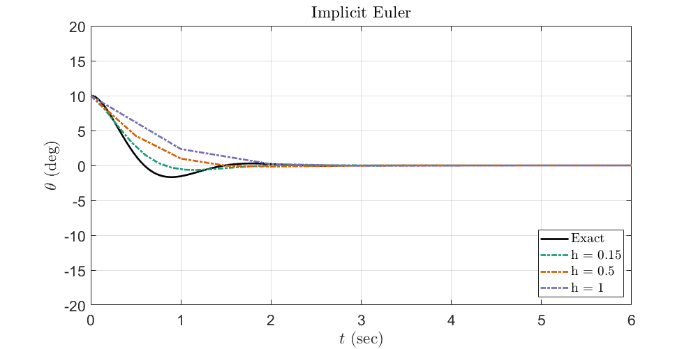
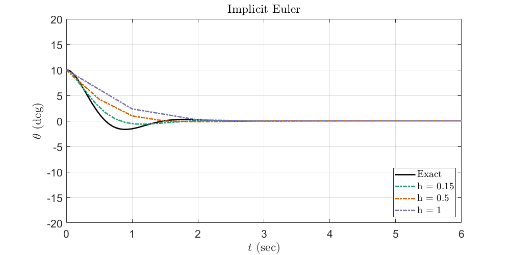

Contents
%{ @author: Benjamin Bemis Ph.D Student, Advisor: Dr Juliano Description: AME 60614: Numerical Methods Homework: 4 Due: 10/31/2024 %}
Preperation of the workspace
clear all clc close all fontsize = 16; % set(0,'DefaultFigureWindowStyle','docked') set(0,'DefaultTextInterpreter','latex') set(0,'DefaultAxesFontSize',fontsize) set(0,'DefaultLegendFontSize',fontsize) colors = ["#000000","#1b9e77","#d95f02","#7570b3","#0099FF"]';
Setting data paths
Make sure to update this for the machine that you are working on. (Maybe, This should now run on any machine without change. 7/24/24) Change the current folder to the folder of this m-file.
if(~isdeployed) cd(fileparts(matlab.desktop.editor.getActiveFilename)); end addpath(cd) % cd ..; % Moving up a directory (from processing_code) basepath = cd; % Pulling the current directory if isunix imagepath = [basepath '/images/']; % Unix mkdir(imagepath); elseif ispc imagepath = [basepath '\images\']; % Windows mkdir(imagepath); else disp('Platform not supported') end
Warning: Directory already exists.
Problem 2 in Chapter 4
exact = @(t) 0.90991./(exp(0.2*t) + 0.900901*sin(2*t) - 0.0900901*cos(2*t)); f = @(t,y) (-0.2*y) - (2*cos(2*t)*y^2); y0 = 1; t0 = 0; tf = 7; h = [0.2 0.05 0.025 0.006]; figure plot(linspace(t0,tf,1e3),exact(linspace(t0,tf,1e3)),"LineWidth",2, 'DisplayName', "Exact", color=colors(1,:)) hold on for n = 1:size(h,2) [t,y] = explicitEuler(f, y0, t0, tf, h(n)); plot(t,y,"-.", "LineWidth",2, 'DisplayName',strcat("h = ",string(h(n))) , color=colors(n+1,:)) hold on end xlabel('$t$ (sec)') ylabel('$v$') grid on xlim([t0 tf]) ylim([0 1.4]) legend(Location="best",Interpreter="latex") set(gcf,'Position',[0,0,1000,500]) print(gcf,[imagepath,'Q2.png'],'-dpng'); emax=1e-6; % Convergence Tolerance residual_error = 1; h = 0.2 y_prev = []; converged = false; while ~converged [t,y] = explicitEuler(f, y0, t0, tf, h); % If there is a previous solution, compute the L2 norm difference if ~isempty(y_prev) % Interpolate previous solution onto the current time points for comparison y_prev_interp = interp1(t_prev, y_prev, t, 'linear', 'extrap'); % Calculate the L2 norm of the difference between current and previous solution residual_error = sqrt(sum((y - y_prev_interp).^2) * h); % Check if residual error is below the tolerance and greater than % initial step if residual_error < emax && h < 0.1 converged = true; disp(['Converged with step size h = ', num2str(h), ' and L2 norm error = ', num2str(residual_error)]); else % If not converged, halve the step size h = h / 2; disp(['Step size halved to h = ', num2str(h), ' with L2 norm error = ', num2str(residual_error)]); end end % Update previous solution and time points for the next iteration y_prev = y; t_prev = t; end figure plot(linspace(t0,tf,1e3),exact(linspace(t0,tf,1e3)),"LineWidth",2, 'DisplayName', "Exact", color=colors(1,:)) hold on plot(t,y,"-.", "LineWidth",2, 'DisplayName',strcat("h = ",string(h)) , color=colors(2,:)) xlabel('$t$ (sec)') ylabel('$v$') grid on xlim([t0 tf]) ylim([0 1.4]) legend(Location="best",Interpreter="latex") set(gcf,'Position',[0,0,1000,500]) print(gcf,[imagepath,'Q2_c.png'],'-dpng');
Problem 6 in Chapter 4
funlist = {@explicitEuler, @implicitEuler,@trapMethod,@RK2,@RK4};
funlist_str = ["Explicit Euler", "Implicit Euler","Trapizoidal Method","RK2","RK4"];
f = @(t,y) -((3*t)/(1+t))*y - (2*(1+t)^3*exp(-t));
y0 = 1;
t0 = 0;
tf = 15;
h = [0.2 0.8 1.1];
exact = @(t) -exp(-3*t).*(exp(2*t) - 2).*(t + 1).^3;
for i = 1:length(funlist)
figure
plot(linspace(t0,tf,1e3),exact(linspace(t0,tf,1e3)),"LineWidth",2, 'DisplayName', "Exact", color=colors(1,:))
hold on
for n = 1:length(h)
[t,y] = funlist{i}(f, y0, t0, tf, h(n));
plot(t,y, "-.", "LineWidth",2, 'DisplayName',strcat("h = ",string(h(n))) , color=colors(n+1,:))
hold on
end
xlabel('$t$ (sec)')
ylabel('$v$')
legend(Location="best",Interpreter="latex")
xlim([t0 tf])
ylim([-4 1])
grid on
title(funlist_str(i))
set(gcf,'Position',[0,0,1000,500])
print(gcf,[imagepath,'Q6',char(string(i)),'.png'],'-dpng');
end
Problem 8 in Chapter 4
funlist2 = {@explicitEuler_2, @implicitEuler_2,@trapMethod_2,@RK2_2,@RK4_2};
funlist_str = ["Explicit Euler", "Implicit Euler","Trapizoidal Method","RK2","RK4"];
exact = @(t) 10*cos(4.04351*t);
exact2 = @(t) exp(-2* t).* (5.6911* sin(3.51426 *t) + 10 *cos(3.51426*t));
exact3 = @(t) pi/3 *cos(4.04351 *t);
g = 9.81; %m/s^2
l = 0.6; %m
c = 4;
theta0= 10; %deg
thetap0 = 0; % assume at rest
f_theta = @(t, theta, thetap) -g/l *theta ;
f_theta_2 = @(t, theta, thetap) -g/l *theta -c*thetap ;
f_theta_3 = @(t, theta, thetap) -g/l *sin(theta) ;
t0 = 0;
tf = 6;
h = [.15 .5 1];
hi = [.15 .05 .001]
for i = 1:length(funlist2)
figure
plot(linspace(t0,tf,1e3),exact(linspace(t0,tf,1e3)),"LineWidth",2, 'DisplayName', "Exact", color=colors(1,:))
hold on
for n = 1:length(h)
[t,y,yp] = funlist2{i}(f_theta,theta0,thetap0, t0, tf, h(n));
plot(t,y, "-.", "LineWidth",2, 'DisplayName',strcat("h = ",string(h(n))) , color=colors(n+1,:))
hold on
end
xlabel('$t$ (sec)')
ylabel('$\theta$ (deg)')
legend(Location="southeast",Interpreter="latex")
xlim([t0 tf])
ylim([-20 20])
grid on
title(funlist_str(i))
set(gcf,'Position',[0,0,1000,500])
print(gcf,[imagepath,'Q8_a',char(string(i)),'.png'],'-dpng');
figure
plot(linspace(t0,tf,1e3),exact2(linspace(t0,tf,1e3)),"LineWidth",2, 'DisplayName', "Exact", color=colors(1,:))
hold on
for n = 1:length(h)
[t,y,yp] = funlist2{i}(f_theta_2,theta0,thetap0, t0, tf, h(n));
plot(t,y, "-.", "LineWidth",2, 'DisplayName',strcat("h = ",string(h(n))) , color=colors(n+1,:))
hold on
end
xlabel('$t$ (sec)')
ylabel('$\theta$ (deg)')
legend(Location="southeast",Interpreter="latex")
xlim([t0 tf])
ylim([-20 20])
grid on
title(funlist_str(i))
set(gcf,'Position',[0,0,1000,500])
print(gcf,[imagepath,'Q8_b',char(string(i)),'.png'],'-dpng');
figure
plot(linspace(t0,tf,1e3),exact3(linspace(t0,tf,1e3)),"LineWidth",2, 'DisplayName', "Exact", color=colors(1,:))
hold on
for n = 1:length(hi)
[t,y,yp] = funlist2{i}(f_theta_3,pi/3,thetap0, t0, tf, hi(n));
plot(t,y, "-.", "LineWidth",2, 'DisplayName',strcat("h = ",string(hi(n))) , color=colors(n+1,:))
hold on
end
xlabel('$t$ (sec)')
ylabel('$\theta$ (rad)')
legend(Location="southeast",Interpreter="latex")
xlim([t0 tf])
ylim([-5 5])
grid on
title(funlist_str(i))
set(gcf,'Position',[0,0,1000,500])
print(gcf,[imagepath,'Q8_c',char(string(i)),'.png'],'-dpng');
end
hi =
0.1500 0.0500 0.0010
 
 
Functions
function [t, y] = explicitEuler(f, y0, t0, tf, h) % explicitEuler solves an ODE using the explicit Euler method. % % Inputs: % f - Function handle for dy/dt = f(t, y) % y0 - Initial condition (value of y at t = t0) % t0 - Initial time % tf - Final time % h - Step size % % Outputs: % t - Array of time steps % y - Array of solution values at each time step % Define the time vector from t0 to tf with step size h t = t0:h:tf; N = length(t); % Number of time steps y = zeros(1, N); % Preallocate y for speed % Set the initial condition y(1) = y0; % Apply the explicit Euler method for n = 1:N-1 y(n+1) = y(n) + h * f(t(n), y(n)); end end function [t, y] = implicitEuler(f, y0, t0, tf, h) % implicitEuler solves an ODE using the implicit Euler method. % % Inputs: % f - Function handle for dy/dt = f(t, y) % y0 - Initial condition (value of y at t = t0) % t0 - Initial time % tf - Final time % h - Step size % % Outputs: % t - Array of time steps % y - Array of solution values at each time step % Define the time vector from t0 to tf with step size h t = t0:h:tf; N = length(t); % Number of time steps y = zeros(1, N); % Preallocate y for speed % Set the initial condition y(1) = y0; % Options for fsolve to increase accuracy and ensure convergence options = optimoptions('fsolve', 'Display', 'off'); % Apply the implicit Euler method for n = 1:N-1 % Define the function for the nonlinear equation at each step g = @(ynext) ynext - y(n) - h * f(t(n+1), ynext); % Use fsolve to solve for y(n+1) y(n+1) = fsolve(g, y(n), options); end end function [t, y] = trapMethod(f, y0, t0, tf, h) % trapMethod solves an ODE using the trapezoidal method. % % Inputs: % f - Function handle for dy/dt = f(t, y) % y0 - Initial condition (value of y at t = t0) % t0 - Initial time % tf - Final time % h - Step size % % Outputs: % t - Array of time steps % y - Array of solution values at each time step % Define the time vector from t0 to tf with step size h t = t0:h:tf; N = length(t); % Number of time steps y = zeros(1, N); % Preallocate y for speed % Set the initial condition y(1) = y0; % Options for fsolve to increase accuracy and ensure convergence options = optimoptions('fsolve', 'Display', 'off'); % Apply the trapezoidal method for n = 1:N-1 % Define the function for the nonlinear equation at each step g = @(ynext) ynext - y(n) - (h/2) * (f(t(n), y(n)) + f(t(n+1), ynext)); % Use fsolve to solve for y(n+1) y(n+1) = fsolve(g, y(n), options); end end function [t, y] = RK2(f, y0, t0, tf, h) % RK2 solves an ODE using the 2nd-order Runge-Kutta method. % % Inputs: % f - Function handle for dy/dt = f(t, y) % y0 - Initial condition (value of y at t = t0) % t0 - Initial time % tf - Final time % h - Step size % % Outputs: % t - Array of time steps % y - Array of solution values at each time step % Define the time vector from t0 to tf with step size h t = t0:h:tf; N = length(t); % Number of time steps y = zeros(1, N); % Preallocate y for speed % Set the initial condition y(1) = y0; % Apply the 2nd-order Runge-Kutta method for n = 1:N-1 k1 = f(t(n), y(n)); k2 = f(t(n) + h/2, y(n) + h/2 * k1); y(n+1) = y(n) + h * k2; end end function [t, y] = RK4(f, y0, t0, tf, h) % RK4 solves an ODE using the 4th-order Runge-Kutta method. % % Inputs: % f - Function handle for dy/dt = f(t, y) % y0 - Initial condition (value of y at t = t0) % t0 - Initial time % tf - Final time % h - Step size % % Outputs: % t - Array of time steps % y - Array of solution values at each time step % Define the time vector from t0 to tf with step size h t = t0:h:tf; N = length(t); % Number of time steps y = zeros(1, N); % Preallocate y for speed % Set the initial condition y(1) = y0; % Apply the 4th-order Runge-Kutta method for n = 1:N-1 k1 = f(t(n), y(n)); k2 = f(t(n) + h/2, y(n) + h/2 * k1); k3 = f(t(n) + h/2, y(n) + h/2 * k2); k4 = f(t(n) + h, y(n) + h * k3); y(n+1) = y(n) + (h/6) * (k1 + 2*k2 + 2*k3 + k4); end end function [t, y1, y2] = explicitEuler_2(f, y0, v0, t0, tf, h) % A general second-order ODE y'' = f(t, y, y') % using the explicit Euler method. % % Inputs: % f - Function handle for y'' = f(t, y, y') % y0 - Initial condition for y (position) % v0 - Initial condition for y' (velocity) % t0 - Initial time % tf - Final time % h - Step size % % Outputs: % t - Array of time steps % y1 - Array of solution values for y at each time step % y2 - Array of solution values for y' at each time step % Define the time vector from t0 to tf with step size h t = t0:h:tf; N = length(t); % Number of time steps y1 = zeros(1, N); % Preallocate y1 for y (position) y2 = zeros(1, N); % Preallocate y2 for y' (velocity) % Set the initial conditions y1(1) = y0; y2(1) = v0; % Apply the explicit Euler method for n = 1:N-1 % Update y1 and y2 y1(n+1) = y1(n) + h * y2(n); y2(n+1) = y2(n) + h * f(t(n), y1(n), y2(n)); end end function [t, y1, y2] = implicitEuler_2(f, y0, v0, t0, tf, h) % General second-order ODE y'' = f(t, y, y') % using the implicit Euler method. % % Inputs: % f - Function handle for y'' = f(t, y, y') % y0 - Initial condition for y (position) % v0 - Initial condition for y' (velocity) % t0 - Initial time % tf - Final time % h - Step size % % Outputs: % t - Array of time steps % y1 - Array of solution values for y at each time step % y2 - Array of solution values for y' at each time step % Define the time vector from t0 to tf with step size h t = t0:h:tf; N = length(t); % Number of time steps y1 = zeros(1, N); % Preallocate y1 for y (position) y2 = zeros(1, N); % Preallocate y2 for y' (velocity) % Set the initial conditions y1(1) = y0; y2(1) = v0; % Options for fsolve options = optimoptions('fsolve', 'Display', 'off'); % Apply the implicit Euler method for n = 1:N-1 % Define the system of equations to solve at each step func = @(Y_next) [ Y_next(1) - y1(n) - h * Y_next(2); % y1^{n+1} = y1^n + h * y2^{n+1} Y_next(2) - y2(n) - h * f(t(n+1), Y_next(1), Y_next(2)) % y2^{n+1} = y2^n + h * f(t^{n+1}, y1^{n+1}, y2^{n+1}) ]; % Initial guess for fsolve Y_guess = [y1(n), y2(n)]; % Solve for Y_next = [y1^{n+1}; y2^{n+1}] using fsolve Y_next = fsolve(func, Y_guess, options); % Update y1 and y2 with the solved values y1(n+1) = Y_next(1); y2(n+1) = Y_next(2); end end function [t, y1, y2] = trapMethod_2(f, y0, v0, t0, tf, h) % General second-order ODE y'' = f(t, y, y') % using the trapezoidal (implicit) method. % % Inputs: % f - Function handle for y'' = f(t, y, y') % y0 - Initial condition for y (position) % v0 - Initial condition for y' (velocity) % t0 - Initial time % tf - Final time % h - Step size % % Outputs: % t - Array of time steps % y1 - Array of solution values for y at each time step % y2 - Array of solution values for y' at each time step % Define the time vector from t0 to tf with step size h t = t0:h:tf; N = length(t); % Number of time steps y1 = zeros(1, N); % Preallocate y1 for y (position) y2 = zeros(1, N); % Preallocate y2 for y' (velocity) % Set the initial conditions y1(1) = y0; y2(1) = v0; % Options for fsolve options = optimoptions('fsolve', 'Display', 'off'); % Apply the trapezoidal method for n = 1:N-1 % Define the system of equations to solve at each step func = @(Y_next) [ Y_next(1) - y1(n) - h/2 * (y2(n) + Y_next(2)); % y1^{n+1} = y1^n + h/2 * (y2^n + y2^{n+1}) Y_next(2) - y2(n) - h/2 * (f(t(n), y1(n), y2(n)) + f(t(n+1), Y_next(1), Y_next(2))) % y2^{n+1} = y2^n + h/2 * (f_n + f_{n+1}) ]; % Initial guess for fsolve Y_guess = [y1(n), y2(n)]; % Solve for Y_next = [y1^{n+1}; y2^{n+1}] using fsolve Y_next = fsolve(func, Y_guess, options); % Update y1 and y2 with the solved values y1(n+1) = Y_next(1); y2(n+1) = Y_next(2); end end function [t, y1, y2] = RK2_2(f, y0, v0, t0, tf, h) % General second-order ODE y'' = f(t, y, y') % using the second-order Runge-Kutta method. % % Inputs: % f - Function handle for y'' = f(t, y, y') % y0 - Initial condition for y (position) % v0 - Initial condition for y' (velocity) % t0 - Initial time % tf - Final time % h - Step size % % Outputs: % t - Array of time steps % y1 - Array of solution values for y at each time step % y2 - Array of solution values for y' at each time step % Define the time vector from t0 to tf with step size h t = t0:h:tf; N = length(t); % Number of time steps y1 = zeros(1, N); % Preallocate y1 for y (position) y2 = zeros(1, N); % Preallocate y2 for y' (velocity) % Set the initial conditions y1(1) = y0; y2(1) = v0; % Apply the second-order Runge-Kutta method for n = 1:N-1 % Calculate k1 values k1y1 = h * y2(n); k1y2 = h * f(t(n), y1(n), y2(n)); % Calculate k2 values k2y1 = h * (y2(n) + k1y2 / 2); k2y2 = h * f(t(n) + h / 2, y1(n) + k1y1 / 2, y2(n) + k1y2 / 2); % Update y1 and y2 y1(n+1) = y1(n) + k2y1; y2(n+1) = y2(n) + k2y2; end end function [t, y1, y2] = RK4_2(f, y0, v0, t0, tf, h) % RK4_2 % Inputs: % f - Function handle for y'' = f(t, y, y') % y0 - Initial condition for y (y(t0) = y0) % v0 - Initial condition for y' (y'(t0) = v0) % t0 - Initial time % tf - Final time % h - Step size % % Outputs: % t - Array of time steps % y1 - Array of solution values for y at each time step % y2 - Array of solution values for y' at each time step % Define the time vector from t0 to tf with step size h t = t0:h:tf; N = length(t); % Number of time steps y1 = zeros(1, N); % Preallocate y1 for y y2 = zeros(1, N); % Preallocate y2 for y' % Set the initial conditions y1(1) = y0; y2(1) = v0; % Apply the 4th-order Runge-Kutta method for n = 1:N-1 % Calculate k1 values k1_y1 = y2(n); k1_y2 = f(t(n), y1(n), y2(n)); % Calculate k2 values k2_y1 = y2(n) + h/2 * k1_y2; k2_y2 = f(t(n) + h/2, y1(n) + h/2 * k1_y1, y2(n) + h/2 * k1_y2); % Calculate k3 values k3_y1 = y2(n) + h/2 * k2_y2; k3_y2 = f(t(n) + h/2, y1(n) + h/2 * k2_y1, y2(n) + h/2 * k2_y2); % Calculate k4 values k4_y1 = y2(n) + h * k3_y2; k4_y2 = f(t(n) + h, y1(n) + h * k3_y1, y2(n) + h * k3_y2); % Update y1 and y2 using weighted average of slopes y1(n+1) = y1(n) + (h/6) * (k1_y1 + 2*k2_y1 + 2*k3_y1 + k4_y1); y2(n+1) = y2(n) + (h/6) * (k1_y2 + 2*k2_y2 + 2*k3_y2 + k4_y2); end end
h =
0.2000
Step size halved to h = 0.1 with L2 norm error = 0
Step size halved to h = 0.05 with L2 norm error = 0.28934
Step size halved to h = 0.025 with L2 norm error = 0.20358
Step size halved to h = 0.0125 with L2 norm error = 0.13601
Step size halved to h = 0.00625 with L2 norm error = 0.082385
Step size halved to h = 0.003125 with L2 norm error = 0.046103
Step size halved to h = 0.0015625 with L2 norm error = 0.024514
Step size halved to h = 0.00078125 with L2 norm error = 0.012658
Step size halved to h = 0.00039063 with L2 norm error = 0.0064345
Step size halved to h = 0.00019531 with L2 norm error = 0.0032442
Step size halved to h = 9.7656e-05 with L2 norm error = 0.001629
Step size halved to h = 4.8828e-05 with L2 norm error = 0.0008162
Step size halved to h = 2.4414e-05 with L2 norm error = 0.00040853
Step size halved to h = 1.2207e-05 with L2 norm error = 0.00020437
Step size halved to h = 6.1035e-06 with L2 norm error = 0.00010221
Step size halved to h = 3.0518e-06 with L2 norm error = 5.1113e-05
Step size halved to h = 1.5259e-06 with L2 norm error = 2.5558e-05
Step size halved to h = 7.6294e-07 with L2 norm error = 1.278e-05
Step size halved to h = 3.8147e-07 with L2 norm error = 6.3899e-06
Step size halved to h = 1.9073e-07 with L2 norm error = 3.195e-06
Step size halved to h = 9.5367e-08 with L2 norm error = 1.5975e-06
Converged with step size h = 9.5367e-08 and L2 norm error = 7.9875e-07